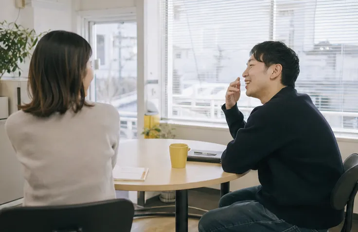

住まいと仕事は、
別々の窓口では
間に合わない。
仕事を探そうとすると、履歴書に書く住所が要ります。部屋を借りようとすると、勤め先と収入を聞かれます。どちらか片方が欠けた人にとって、この二つの窓口は、互いに相手が先だと言っているように見えます。
アケビラキは、住まいと仕事を同じ机の上で、同じ担当者が、同時に探します。寮のある仕事が合う人もいれば、まず部屋を決めてから近くで働きたい人もいます。順番はその人の事情で決めます。
相談に来た理由を、根掘り葉掘り聞くことはしません。聞きたいのは、明日からどこで眠り、どんなふうに働きたいかです。
Our Promise
大切にしている3つのこと
01
住まいと仕事を、
同じ担当者が探す窓口をたらい回しにしないために、ひとりの相談者にひとりの担当がつきます。求人と物件の両方を見ながら、通勤や家賃のつじつまを一緒に合わせます。
02
名前で呼び、
事情は聞きすぎない「相談者さん」ではなく、名前で呼びます。話したくないことは、話さなくてかまいません。必要な手続きに関わることだけ、理由を説明してからうかがいます。
03
鍵を渡したあとも、
半年は連絡を続ける入居と入社がゴールではありません。最初のお給料が出るまでの暮らし、職場での困りごと。決まってから半年間は、月に一度こちらから連絡します。
Message
代表メッセージ

前職では、相模原で賃貸住宅の仲介をしていました。保証人がいない、勤め先がまだ決まっていない。そういう理由で、内見の前に話が終わってしまう方を何人も見送りました。
一方で、近くの工場や食堂からは「人が来ない」「寮はあるのに空いている」という声も聞いていました。足りない人と、空いている場所。その間をつなぐ人がいないだけではないか。それがアケビラキを始めたきっかけです。
窓口に来る方の多くは、ほんの少し前まで、ふつうに働いていた人たちです。もう一度、朝起きて仕事に向かう生活に戻れるように。わたしたちはその最初の数か月を、となりで一緒に過ごします。
株式会社アケビラキ 代表取締役高森 奏太
Numbers
数字で見るアケビラキ
- これまでの相談2,480件
- 住まいが決まった人612人
- 受け入れ企業138社
2019年6月から2026年8月末までの累計です。
Company
会社概要
| 会社名 | 株式会社アケビラキ（AKEBIRAKI Inc.） |
|---|---|
| 代表者 | 代表取締役 高森 奏太 |
| 設立 | 2019年6月 |
| 資本金 | 900万円 |
| 所在地 | 〒252-0243 神奈川県相模原市中央区上溝5-18-9 みなみ野ビル3階 |
| 連絡先 | TEL 042-098-4172（相談ダイヤル） FAX 042-098-4173 相談 soudan@akebiraki.jp ／ 応援・取材 hello@akebiraki.jp |
| 事業内容 |
|
| 拠点 | 相談窓口（相模原市中央区）／ハウス上溝／町田サテライト（拠点のご案内） |
| 従業員数 | 21名（2026年9月時点） |
History
あゆみ
- 株式会社アケビラキを設立。相模原市中央区上溝に相談窓口をひらく
- 住まい付きの仕事を紹介する「シゴトノヤネ」を始める
- 保証人がいなくても借りられる部屋を探す「ひらくへや」を始める
- 東京都町田市に「町田サテライト」を開設
- マンスリーサポーターの受け付けを始める
- マンスリーサポーターが200名を超える
- 個室14室の一時滞在住宅「アケビラキ ハウス上溝」を開所